# Don't attach the package to avoid weird aliasing issues
knn.reg <- FNN::knn.reg
args(knn.reg)function (train, test = NULL, y, k = 3, algorithm = c("kd_tree",
"cover_tree", "brute"))
NULL\[\newcommand{\E}{\mathbb{E}} \newcommand{\R}{\mathbb{R}} \newcommand{\bx}{\mathbf{x}}\newcommand{\bbeta}{\mathbf{\beta}} \newcommand{\bX}{\mathbf{X}} \newcommand{\by}{\mathbf{y}} \newcommand{\bz}{\mathbf{z}} \newcommand{\bA}{\mathbf{A}} \newcommand{\bb}{\mathbf{b}} \newcommand{\bc}{\mathbf{c}}\]
Suppose we want to fit a linear model to a given data set (for any of the reasons we discuss in more detail below): how can we choose which line to fit? (There are infinitely many!)
Since our goal is minimizing test error, and we hope training error is at least a somewhat helpful proxy for training error, we can pick the line that minimizes training error. To do this, we need to commit to a specific measure of error. As the name Ordinary Least Squares suggests, OLS uses (mean) squared error as its target.
Why is MSE the right choice here? It turns out that MSE is very nice computationally, but the reason is actually more fundamental: given a random variable \(Z\), suppose we want to minimize the \((Z - \mu)\) for some \(\mu\): it can be shown (Q: reflection exercise!) that
\[ \E[Z] = \text{argmin}_{\mu \in \R} \E[(Z - \mu)^2]\]
That is, the quantity that minimizes the MSE is the mean. So when we fit a line to some data by OLS, we are implicitly trying to fit to \(\E[y]\) - a very reasonable thing to do!
Specifically, given training data \(\mathcal{D} = \{(\bx_i, y_i)\}_{i=1}^n\) where each \(\bx_i \in \R^p\), OLS finds \(\bbeta \in \R^p\) such that \[ \hat{\bbeta} = \text{argmin}_{\bbeta \in \R^p} \frac{1}{n}\sum_{i=1}^n \left(y_i - \sum_{j=1}^p \beta_jx_j\right)^2 = \text{argmin}_{\bbeta \in \R^p} \frac{1}{n}\sum_{i=1}^n \left(y_i - \bx^{\top}\bbeta\right)^2\]
Some possibly new notation here:
\(\bx^{\top}\bbeta\) is the (inner) product of two vectors: defined as the sum of their elementwise products.
Optimization problems:
These problems say: find the value of \(x\) in the set \(\mathcal{C}\) that minimizes the function \(f\). \(\text{argmin}\) says ‘give me the minimizer’ while \(\min\) says give me the minimum value’. These are related by \(f_* = f(\hat{x})\)
The function \(f\) is called the objective; the set \(\mathcal{C}\) is called the constraint set.
Ordinary Least Squares refers to the use of an MSE objective without any additional constraints.
Note the general structure of our approach here:
ML folk call this empirical risk minimization (ERM) since we’re minimizing the risk (average loss) on the data we can see (the training data). Statisticians call this \(M\)-estimation, since it defines an estimator by Minimization of a measure of ‘fit’. Whatever you call it, it’s a very useful ‘meta-method’ for coming up with ML methods.
Q: How does this compare with Maximum Likelihood Estimation?
Q: We set up this ERM method using mean squared error - what happens with other errors? - mean absolute error - mean percent error
So far we’ve set up OLS as \[ \hat{\bbeta} = \text{argmin}_{\bbeta \in \R^p} \frac{1}{n}\sum_{i=1}^n \left(y_i - \bx^{\top}\bbeta\right)^2\]
We can clean this up to make additional analysis easier: - Let \[\by = \begin{pmatrix} y_1 \\ y_2 \\ \vdots \\ y_n \end{pmatrix}\] be the (vertically stacked) vector of responses. - Next look at our predictions: \[\hat{\by} = \begin{pmatrix} \bx_1^{\top}\bbeta \\ \bx_2^{\top}\bbeta \\ \vdots \\ \bx_n^{\top}\bbeta \end{pmatrix} = \begin{pmatrix} \bx_1^{\top} \\ \bx_2^{\top} \\ \vdots \\ \bx_n^{\top} \end{pmatrix}\bbeta = \bX\bbeta\]
Hence, OLS is just \[\hat{\bbeta} = \text{argmin}_{\bbeta \in \R^p} \frac{1}{n} \|\by - \bX\bbeta\|_2^2\] Here \(\|\cdot\|_2^2\) is the (squared Euclidean or \(L_2\)) norm of a vector: defined by \(\|\bz\|_2^2 = \sum z_i^2\)
Q: Do we actually need the \(1/n\) part?
Q: Why is this called linear?
We’ve formulated OLS as \[\hat{\beta} = \text{argmin}_{\bbeta \in \R^p} \frac{1}{n} \|\by - \bX\bbeta\|_2^2.\] In order to solve this, it will be useful to modify it slightly to \[\hat{\beta} = \text{argmin}_{\bbeta \in \R^p} \frac{1}{2} \|\by - \bX\bbeta\|_2^2\]
Q: Why is this ok to do?
In Report #01, you will show that, under MSE loss, our expected test error can be decomposed as
\[\text{MSE} = \text{Bias}^2 + \text{Variance} + \text{Irreducible Error}\]
Let’s show how we can analyze these quantities for a KNN regression problem. Here, we’re using the ‘regression’ version of KNN since it plays nicely with MSE.1
# Don't attach the package to avoid weird aliasing issues
knn.reg <- FNN::knn.reg
args(knn.reg)function (train, test = NULL, y, k = 3, algorithm = c("kd_tree",
"cover_tree", "brute"))
NULLWe also need a ‘true’ function which we’re trying to estimate. Let’s use the following model:
\[\begin{align*} X &\sim \mathcal{U}([0, 1]) \\ Y &\sim \mathcal{N}(4\sqrt{X} + 0.5 * \sin(4\pi * X), 0.25) \end{align*}\]
That is, \(X\) is uniform on the unit interval and \(Y\) is a non-linear function of \(X\) plus some Gaussian noise.
First let’s plot \(X\) vs \(\E[X]\) - under MSE loss this is our ‘best’ (Bayes-optimal) possible guess.
yfun <- function(x) 4 * sqrt(x) + 0.5 * sinpi(4 * x)
x <- seq(0, 1, length.out=101)
y_mean <- yfun(x)
plot(x, y_mean, type="l",
xlab="X", ylab="E[X]",
main="True Regression Function", cex.lab=1.5)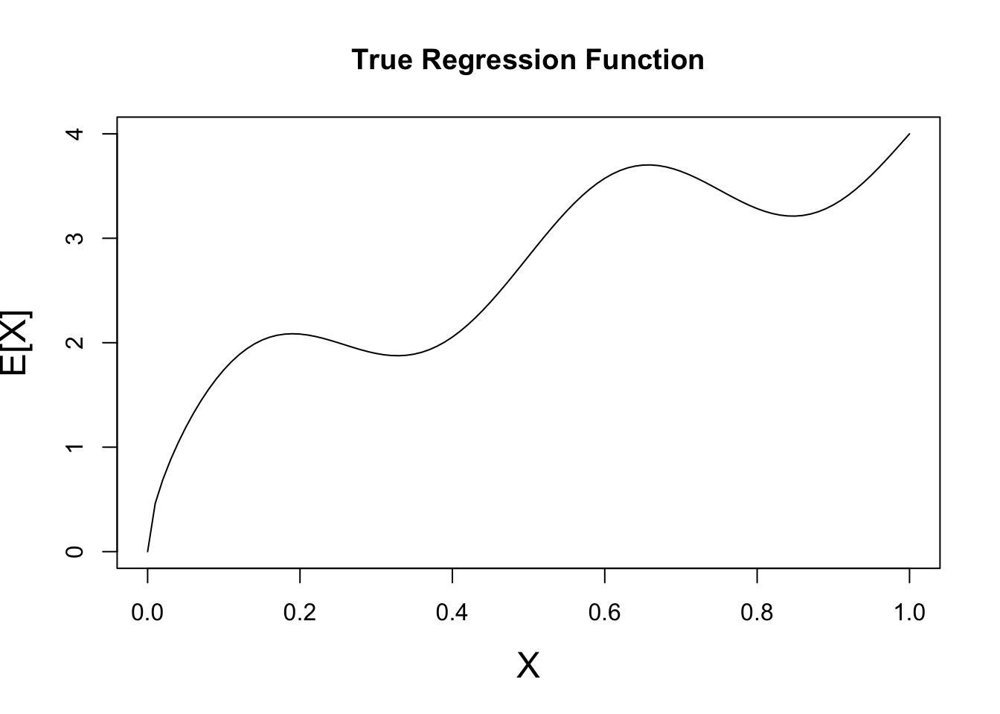
To generate training data from this model, we simply implement the PRNG components:
x_train <- runif(25, 0, 1) # 25 training points
y_train <- rnorm(25, mean=yfun(x_train), sd=0.5)
plot(x, y_mean, type="l",
xlab="X", ylab="E[X]",
cex.lab=1.5)
points(x_train, y_train)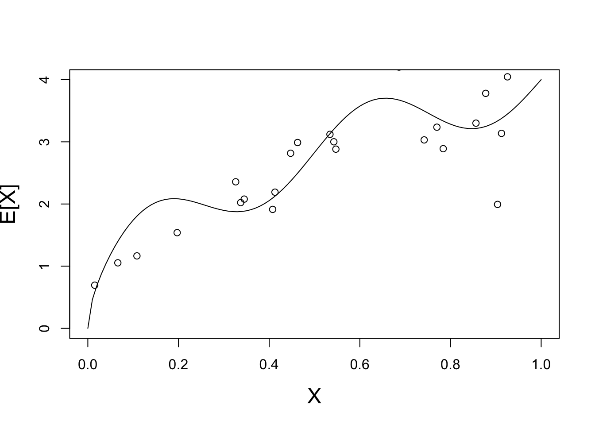
We have some variance of course, but we can still “squint” to get the right shape of our function. Let’s see how KNN looks on this data.
We start with \(K=1\):
X_train <- matrix(x_train, ncol=1)
plot_grid <- matrix(seq(0, 1, length.out=101), ncol=1)
Y_hat <- knn.reg(train=X_train, y=y_train, k=1, test=plot_grid)$pred
plot(x, y_mean, type="l",
xlab="X", ylab="E[X]",
cex.lab=1.5)
points(x_train, y_train)
lines(plot_grid, Y_hat, col="red4", lwd=2)
This is not a great fit - what happens if we repeat this process may times?
plot(x, y_mean, type="l",
xlab="X", ylab="E[X]",
cex.lab=1.5)
for(i in seq(1, 20)){
X_train <- matrix(runif(25, 0, 1), ncol=1)
y_train <- matrix(rnorm(25, mean=yfun(X_train), sd=0.5), ncol=1)
test_grid <- matrix(seq(0, 1, length.out=101), ncol=1)
Y_hat <- knn.reg(train=X_train, y=y_train, k=1, test=test_grid)$pred
lines(test_grid, Y_hat, col="#FFAA0099", lwd=0.5)
}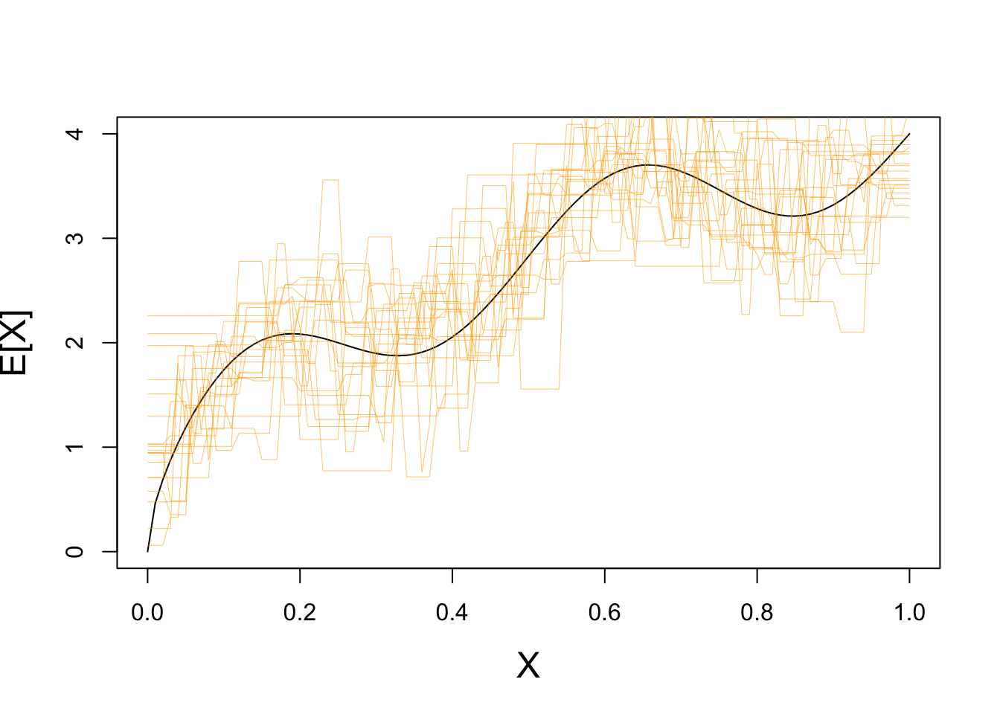
Clearly we have some variance!
If we repeat with a higher value of \(K\), we see far less variance:
plot(x, y_mean, type="l",
xlab="X", ylab="E[X]",
cex.lab=1.5)
for(i in seq(1, 20)){
X_train <- matrix(runif(25, 0, 1), ncol=1)
y_train <- matrix(rnorm(25, mean=yfun(X_train), sd=0.5), ncol=1)
plot_grid <- matrix(seq(0, 1, length.out=101), ncol=1)
Y_hat <- knn.reg(train=X_train, y=y_train, k=10, test=test_grid)$pred
lines(test_grid, Y_hat, col="#FFAA0099", lwd=0.5)
}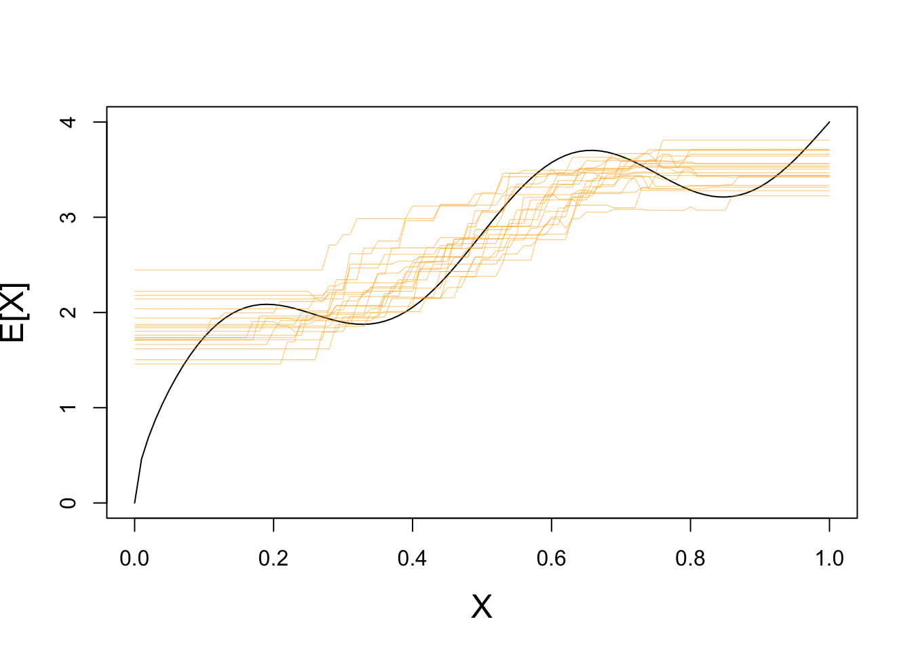
How well does KNN do on average?
That is, if we could repeat this process (infinitely) many times, how well would it recover the true regression function? Let’s try \(K=1\) and \(K=10\):
plot(x, y_mean, type="l",
xlab="X", ylab="E[X]",
cex.lab=1.5)
KNN_AVERAGE_PRED_K1 <- rowMeans(replicate(500, {
X_train <- matrix(runif(25, 0, 1), ncol=1)
y_train <- matrix(rnorm(25, mean=yfun(X_train), sd=0.5), ncol=1)
plot_grid <- matrix(seq(0, 1, length.out=101), ncol=1)
knn.reg(train=X_train, y=y_train, k=1, test=test_grid)$pred
}))
lines(test_grid, KNN_AVERAGE_PRED_K1, col="red4")
KNN_AVERAGE_PRED_K10 <- rowMeans(replicate(500, {
X_train <- matrix(runif(25, 0, 1), ncol=1)
y_train <- matrix(rnorm(25, mean=yfun(X_train), sd=0.5), ncol=1)
plot_grid <- matrix(seq(0, 1, length.out=101), ncol=1)
knn.reg(train=X_train, y=y_train, k=10, test=test_grid)$pred
}))
lines(test_grid, KNN_AVERAGE_PRED_K10, col="blue4")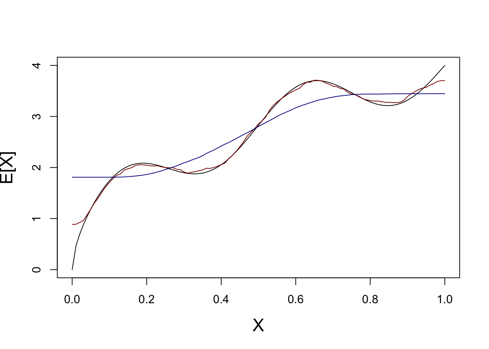
We see here that, on average, KNN with \(K=1\) (red) basically gets the function just right - no bias!
On the other hand, because KNN with \(K=10\) smooths out the function, we see systematic errors (here oversmoothing). That’s some bias.
So which is better? - \(K=1\) - High variance, but low bias - \(K=10\) - Low variance, but high bias
We’ll have to look at some test error to see. For now, we’ll generate our test data exactly the same way as we generate our training data:
KNN_K1_ERROR <- replicate(500, {
X_train <- matrix(runif(25, 0, 1), ncol=1)
y_train <- matrix(rnorm(25, mean=yfun(X_train), sd=0.5), ncol=1)
plot_grid <- matrix(seq(0, 1, length.out=101), ncol=1)
# Generate from same model as before
X_test <- matrix(runif(25, 0, 1), ncol=1)
y_test <- matrix(rnorm(25, mean=yfun(X_train), sd=0.5), ncol=1)
y_hat <- knn.reg(train=X_train, y=y_train, k=1, test=X_test)$pred
err = y_test - y_hat
})
KNN_K1_MSE <- mean(rowMeans(KNN_K1_ERROR^2))
KNN_K10_ERROR <- replicate(500, {
X_train <- matrix(runif(25, 0, 1), ncol=1)
y_train <- matrix(rnorm(25, mean=yfun(X_train), sd=0.5), ncol=1)
plot_grid <- matrix(seq(0, 1, length.out=101), ncol=1)
# Generate from same model as before
X_test <- matrix(runif(25, 0, 1), ncol=1)
y_test <- matrix(rnorm(25, mean=yfun(X_train), sd=0.5), ncol=1)
y_hat <- knn.reg(train=X_train, y=y_train, k=10, test=X_test)$pred
err = y_test - y_hat
})
KNN_K10_MSE <- mean(rowMeans(KNN_K10_ERROR^2))
cbind(K1_MSE = KNN_K1_MSE,
K10_MSE = KNN_K10_MSE) K1_MSE K10_MSE
[1,] 1.934903 1.477877\(K=10\) does better overall!
But does it do better everywhere or are some parts of the problem better for \(K=1\)?
Now we’ll be systematic in our test data - spacing it equally on the grid and computing ‘pointwise’ MSE:
KNN_K1_ERROR <- replicate(500, {
X_train <- matrix(runif(25, 0, 1), ncol=1)
y_train <- matrix(rnorm(25, mean=yfun(X_train), sd=0.5), ncol=1)
# Generate from same model as before
test_grid <- seq(0, 1, length.out=101)
X_test <- matrix(runif(test_grid, 0, 1), ncol=1)
y_test <- matrix(rnorm(test_grid, mean=yfun(X_test), sd=0.5), ncol=1)
y_hat <- knn.reg(train=X_train, y=y_train, k=1, test=X_test)$pred
err = y_test - y_hat
})
KNN_K1_MSE <- rowMeans(KNN_K1_ERROR^2)
KNN_K10_ERROR <- replicate(500, {
X_train <- matrix(runif(25, 0, 1), ncol=1)
y_train <- matrix(rnorm(25, mean=yfun(X_train), sd=0.5), ncol=1)
test_grid <- seq(0, 1, length.out=101)
X_test <- matrix(runif(test_grid, 0, 1), ncol=1)
y_test <- matrix(rnorm(101, mean=yfun(X_test), sd=0.5), ncol=1)
y_hat <- knn.reg(train=X_train, y=y_train, k=10, test=X_test)$pred
err = y_test - y_hat
})
KNN_K10_MSE <- rowMeans(KNN_K10_ERROR^2)
plot(KNN_K1_MSE, col="blue4", pch=16, ylim=c(0, 1))
points(KNN_K10_MSE, col="red4", pch=16)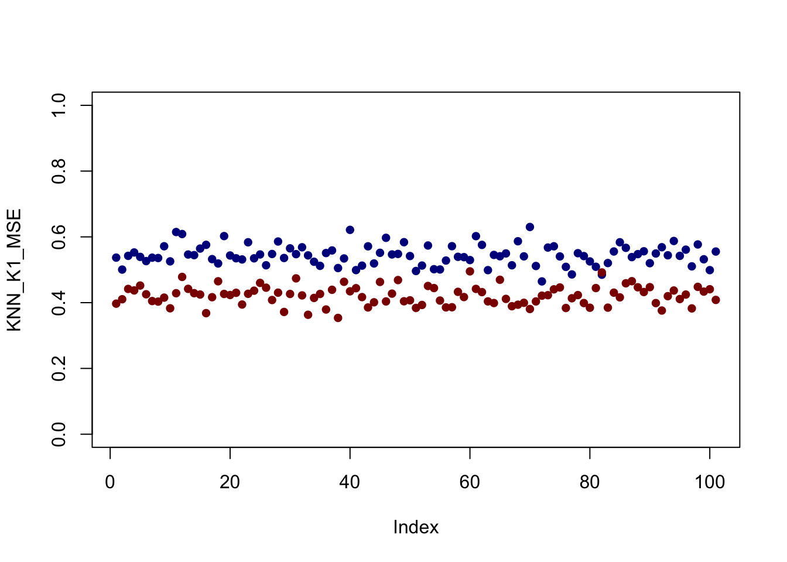
It looks like - for this set up at least - \(K=10\) is better everywhere but that’s not always the case.
Play around with the size of the training data, the noise in the samples, and the data generating function (yfun) to see if you can get different behavior.
Also - is \(K=10\) really the optimal choice here? What would happen if we changed \(n\)?
So, now that we have a good sense of (average) test error, can we verify our MSE decomposition?
Recall \[\begin{align*} \E[\text{MSE}] &= \text{Bias}^2 + \text{Variance} + \text{Irreducible Error} \\ \text{ where } \text{Bias}^2 &= \E\left[\left(\E[\hat{y}] - \E[y]\right)^2\right] \\ &= \left(\E[\hat{y}] - \E[y]\right)^2 \text{ (Why can I drop the outer expectation?)} \\ \text{Variance} &= \E\left[\left(\hat{y} - \E[y]\right)^2\right] \\ \text{Irreducible Error} &= \E\left[\left(y - \E[y]\right)^2\right] \end{align*}\]
(Make sure you understand these definitions and how they work together!)
Let’s work these out using all the tools we built before.
First, for the bias: - we already have \(\E[y]\) - this is just the yfun we selected - we can compute \(\E[\hat{y}]\) by running KNN many times and averaging the result
sample_grid <- matrix(seq(0, 1, length.out=101), ncol=1)
KNN_AVERAGE_PRED_K1 <- rowMeans(replicate(500, {
X_train <- matrix(runif(25, 0, 1), ncol=1)
y_train <- matrix(rnorm(25, mean=yfun(X_train), sd=0.5), ncol=1)
knn.reg(train=X_train, y=y_train, k=1, test=sample_grid)$pred
}))
KNN_BIAS_K1 <- KNN_AVERAGE_PRED_K1 - yfun(sample_grid)
plot(sample_grid, KNN_BIAS_K1^2, col="red4",
type="l", main="Squared Bias of KNN with K=1")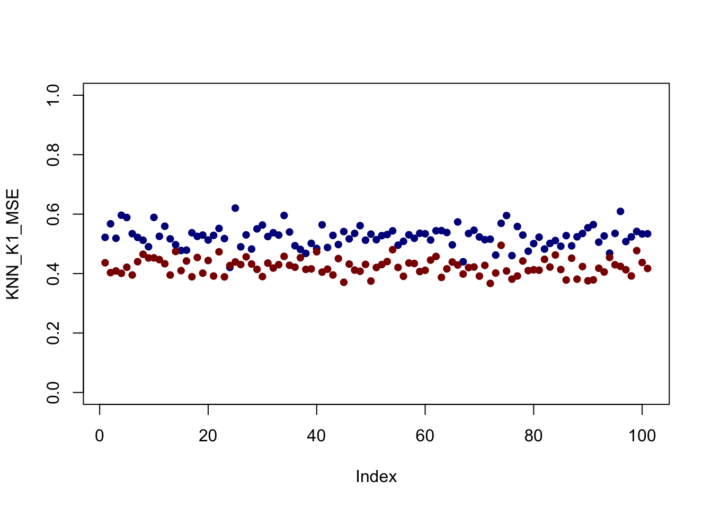
Not too much bias, but things do go a bit off the rails near the end points.
Next, we can compute variance pointwise:
sample_grid <- matrix(seq(0, 1, length.out=101), ncol=1)
KNN_VARIANCE_K1 <- rowMeans(replicate(500, {
X_train <- matrix(runif(25, 0, 1), ncol=1)
y_train <- matrix(rnorm(25, mean=yfun(X_train), sd=0.5), ncol=1)
(knn.reg(train=X_train, y=y_train, k=1, test=sample_grid)$pred - KNN_AVERAGE_PRED_K1)^2
}))
plot(sample_grid, KNN_VARIANCE_K1, col="red4",
type="l", main="Variance of KNN with K=1")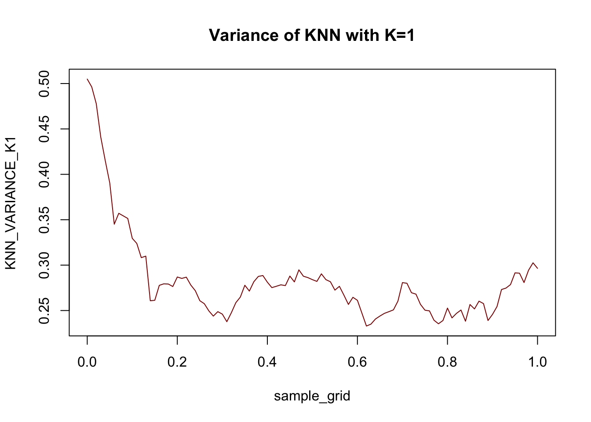
For this data at least, the variance term is generally larger than the bias term: this is what we expect with a very flexible (high variance + low bias) model like \(1\)-NN.
Finally, irreducible error is just 0.25 everywhere (recall \(y \sim \mathcal{N}(\E[y], 0.25)\)).
KNN_IE <- rowMeans(replicate(500, {
sample_grid <- matrix(seq(0, 1, length.out=101), ncol=1)
X_test <- matrix(sample_grid, ncol=1)
y_test <- matrix(rnorm(sample_grid, mean=yfun(X_test), sd=0.5), ncol=1)
y_best_pred <- matrix(yfun(X_test), ncol=1)
(as.vector(y_best_pred - y_test))^2
}))
plot(KNN_IE)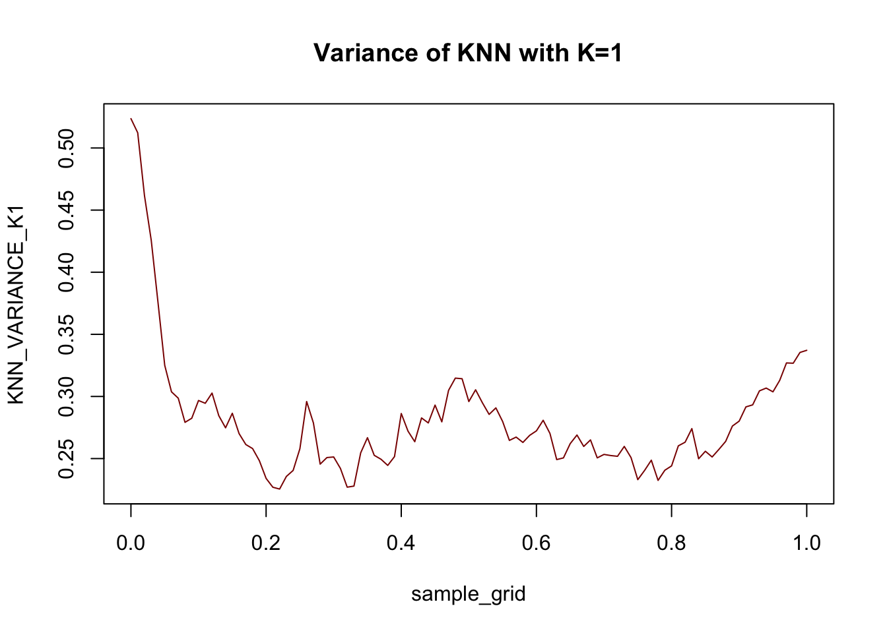
Put these together and we see the decomposition in action:
mean(KNN_BIAS_K1)^2 + mean(KNN_VARIANCE_K1) + mean(KNN_IE)[1] 0.5335291as compared to
mean(KNN_K1_MSE)[1] 0.5444356Visually,
library(dplyr)
library(tidyverse)Warning: package 'lubridate' was built under R version 4.4.1DECOMP_DATA <- data.frame(
sample_grid = sample_grid,
KNN_K1_BIAS2 = KNN_BIAS_K1^2,
KNN_K1_VARIANCE=KNN_VARIANCE_K1,
KNN_K1_IE = KNN_IE,
KNN_K1_MSE = KNN_K1_MSE) |>
pivot_longer(-sample_grid) |>
mutate(Error=value,
Type=case_when(
name=="KNN_K1_BIAS2" ~ "Bias^2",
name=="KNN_K1_IE" ~ "Irreducible Error",
name=="KNN_K1_VARIANCE" ~ "Variance",
name=="KNN_K1_MSE" ~ "Total Error"))
ggplot() +
geom_bar(data=DECOMP_DATA |> filter(Type != "Total Error"),
mapping=aes(x=sample_grid, y=Error, color=Type),
stat="identity") +
geom_line(data=DECOMP_DATA |> filter(Type == "Total Error"),
mapping=aes(x=sample_grid, y=Error),
color="red4", linewidth=2) +
xlab("X") + ylab("Test Error")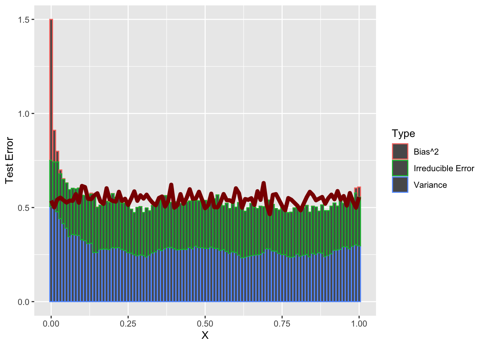
So a bit of weirdness at the left end point - but holds up as well as we might expect for \(N=25\) samples.
How do the relative magnitudes of these terms change as you adjust the parameters of the simulation?
In this course, we will frequently want to find the minimizer of certain functions. Typically, these will arise as ERMs and the function will take a \(p\)-vector of inputs, e.g. regression coefficients, and produce a scalar loss output. Let us generally call this function \(f: \R^p \to \R\).
In some circumstances, we can take the derivative of \(f\), typically called the gradient in this context, and set it equal to zero. For example, suppose we want to minimize an expression of the form:
\[f(\bx) = \frac{1}{2}\bx^{\top}\bA\bx + \bb^{\top}\bx + c\]
where \(\bA\) is a symmetric strictly positive-definite matrix, \(\bb\) is an arbitrary \(p\)-vector, and \(c\) is a constant. Taking the gradient, we find
\[ \frac{\partial f}{\partial \bx} = \bA\bx + \bb\]
We set this to zero and find a crticial point at:
\[\begin{align*} \mathbf{0} &= \bA\bx + \bb \\ - \bb &= \bA\bx \\ \implies \bx &= -\bA^{-1}\bb \end{align*}\]
assuming that \(\bA\) is invertible. (Here, invertibility is implied by assuming \(\bA\) is strictly positive-definite.) As usual, we are not quite done here, as we must also check that this is a minimizer and not a maximizer or a saddle point. To do so, we take the second derivative to find
\[ \frac{\partial}{\partial \bx}\frac{\partial f}{\partial \bx} = \bA\]
In this multivariate context, we need the second derivative, a.k.a the Hessian, to be strictly positive-definite to guarantee that we have found a minimizer and this is indeed exactly what we assumed above. As discussed above, ‘definiteness’ plays the role of sign for many applications of matrix-ness. Here, by assuming strictly positive definite, we are essentially treating the matrix as strictly positive (\(>0\)), which is exactly the condition we need to guarantee a minimizer in the scalar case as well.
Hence, we have that the one minimizer of \(f\) is found at \(\bx_* = \bA^{-1}\bb\). Compare this to the scalar case of minimizing a quadratic \(\frac{1}{2}ax^2 + bx + c\) with minimizer at \(x = -b/a\).2
The above analysis works well, but it is essentially the only minimization we will be able to do in closed form in this course.3
For other functions, we will need to apply optimization: the mathematical toolkit for finding minimizers (or maximizers) of functions. Fortunately for us, many of the methods we begin this course with fall in the realm of convex optimization, a particularly nice branch of optimization.
Convex Optimization refers to the problem of minimizing convex functions over convex sets. Let’s define both of these:
A convex function is one which satisfies this inequality at all points: \[f(\lambda \bx + (1-\lambda)\by) \leq \lambda f(\bx) + (1-\lambda) f(\by)\]
for any \(\bx, \by\) and any \(\lambda \in [0, 1]\).
This definition is a bit non-intuitive, but it basically implies that we have a “bowl-like” function. This definition captures the idea that the actual function value is always less than we might get from linear interpolation. A picture is helpful here:
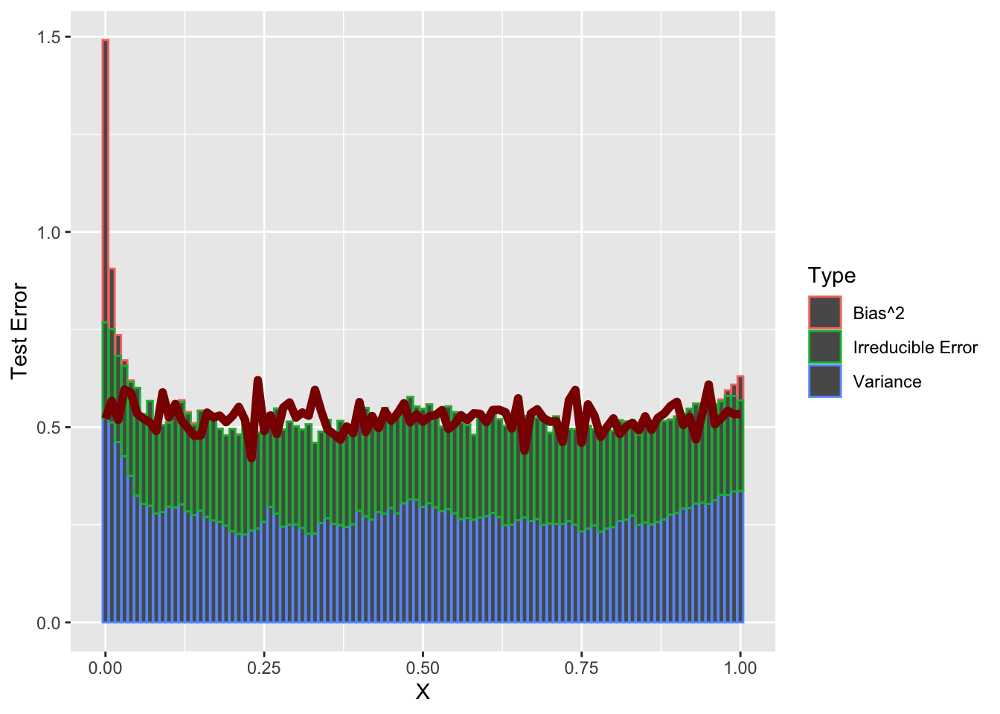
Here, we see that the actual value of the function (blue dot) is less than what we would get if we interpolated the two red points (red line).
An alternative definition is that if \(f\) is twice-differentiable, its Hessian (2nd derivative matrix) is positive semi-definite.
A convex set is one that allows us to look “between” points. Specifically, a set \(\mathcal{C} \subseteq \R^p\) is convex if \[\bx, \by \in \mathcal{C} \implies \lambda \bx + (1-\lambda)\by \in \mathcal{C}\]
for all \(\bx, \by \in \mathcal{C}\) and any \(\lambda \in [0, 1]\).
Clearly these are related by the idea of looking “between” two points:
To tie these together, note another alternative characterization of a convex function: one whose epigraph (the area above the curve in the plot) is a convex set.
For optimization purposes, these two properties imply a rather remarkable fact:
If \(\bx_0\) is a local minimum of \[\min_{\bx \in \mathcal{C}} f(\bx)\], then it is a global minimum.
This is quite shocking: if we find a point where we can’t improve by going in any direction, we are guaranteed to have found a global minimum and no point could be better. (It is possible to have multiple minimizers however: consider \(f(\bx) = 0\). Any choice of \(\bx\) is a global minimizer.) This lets us turn the “global” search problem into a “local” one.
Of course, this only helps us if we can find a local minimizer of \(f\). How might we do so? Let’s recall a basic calculus idea: the gradient of a function is a vector that points in the direction of greatest increase (the “steepest” uphill). So if we go in the opposite direction of the gradient, we actually will go “downhill”. In fact, this is basically all we need to start applying gradient descent.
Gradient Descent: Given a convex function \(f\):
Repeated infinitely many times, this will converge to a local, and hence global, minimizer of \(f\). There are many variants of this basic idea4, mostly related to selecting the optimal step size \(c\), but this is the most important algorithm in convex optimization and it is important to understand it deeply.
We can apply it here to the 3D function \[f(\bx) = (x_1-2)^2 + (x_2-3)^2 + (x_3 - 4)^2.\] Clearly, we can see that the minimizer has to be at \((2, 3, 4)\), but our algorithm won’t use that fact.
Before we can implement this algorithm, we need the gradient, which is given by
\[f(\bx) = \left\|\bx - (2,3,4)^{\top}\right\|_2^2 \implies \nabla f = 2[\bx - (2, 3, 4)^{\top}]\]
x <- matrix(c(0, 0, 0), ncol=1) # We want to work exclusively with column vecs
converged <- FALSE
c <- 0.001 # Small step size
f <- function(x) sum((x - c(2, 3, 4))^2)
grad <- function(x) 2 * (x - matrix(c(2, 3, 4), ncol=1))
while(!converged){
g <- grad(x)
x_new <- x - c * g
if(sum(abs(x - x_new)) < 1e-5){
converged <- TRUE
}
x <- x_new
}
x [,1]
[1,] 1.998893
[2,] 2.998340
[3,] 3.997787We don’t get the exact minimizer, but we certainly get something ‘close enough’ for our purposes. In Report #01, you will use gradient descent and some variants to study the least squares problem.
Often, we will want to see how the value of \(f(\bx_k)\) changes over the course of the optimization. We expect that it will go down monotonically, but it may not be worth continuing the optimization if we have reached a point of ‘diminishing returns.’ You can do this by hand (evaluating \(f\) after each update and storing the results), but many optimizers will often track this automatically for you: e.g. TensorBoard.5
The Bias-Variance decomposition (and tradeoff) holds approximately for other loss functions, though the math is only this nice for MSE.↩︎
Note that we can only minimize this quadratic in the case where \(a\) is strictly positive so the parabola is upward facing. This is the scalar equivalent of the strict positive-definiteness condition we put on \(\bA\).↩︎
OLS and some basic variants (ridge regression) can be written in this ‘quadratic’ style. Can you see why?↩︎
For instance, of the 14 optimization algorithms included in base pytorch, all but one are advanced versions of gradient descent. The exception is LBFGS which attempts to (approximately) use both the gradient and the Hessian (second derivative); computing the Hessian is normally quite expensive, so LBFGS uses some clever tricks to approximate the Hessian.↩︎
Modern ML toolkits like pytorch or TensorFlow are (at heart) fancy systems to do two things automatically that we did ‘by hand’ in this example:↩︎